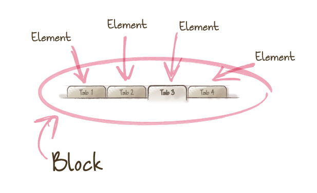

CodeStyle-CSS Padrões
Faaaaaala galera (copiando um pouco o Daniel Filho),
Estou trazendo para vocês depois de um tempo a continuação da série sobre code style e hoje vamos falar um pouco a respeito de padrões CSS já estabelecidos ai no mercado e adotado por várias equipes e empresas pelo mundo a fora. Sei que faz um tempo que o blog está parado, mas agora que estou conseguindo colocar um pouco de ordem na correria do dia a dia e conseguindo postar mais, mas isso são assuntos para outros posts.
Bom vamos lá então…
Para começar os padrões que vamos abordar aqui hoje serão:
- CSS Orientado a Objetos
- SMACSS
- BEM
- ITCSS
e também vou dar umas dicas gerais, que podemos acrescentar junto a esses padrões para termos um pouco mais de performance.
Bom vamos pelo primeiro então.
##CSS Orientado a Objetos
Orientação a objeto é um termo clássico quando se trata de desenvolvimento de software e principalmente conhecido quando se está no desenvolvimento back-end, ou de linguagens mais robustas e claro cada uma com suas particularidades.
A essência da orientação a objeto é evitar a repetição de código. O OOCSS ou CSS Orientado a Objetos começou em 2009 com Dona Sullivan ex Yahoo depois de analizar muito de seus códigos antigos reparou que há muita repetição e com isso propôs o OOCSS:
Para deixar bem claro, não se trata de mudar a sintaxe do CSS ou instalar algum pacote mágico que o fará melhor. CSS orientado a objetos é uma metáfora para indicar que é possível escrever um CSS mais eficiente, sem repetições, que seja mais profissional e é considerado por alguns até como framework.
Alguns dos prolemas que o OOCSS visa resolver
- A dificuldade de tocar projetos de médio/grande porte.
- O tamanho dos arquivos CSS é cada vez maior conforme o projeto evolui.
- Reúso de código quase inexistente (pessoas não confiam em código alheio).
- Código frágil (até o melhor código pode se perder quando um não expert mexe nele).
Segundo a Dona Sullivan (slides), as soluções que emergem do uso de OOCSS são inúmeras (e tentadoras), tornando seu CSS:
- Modular: combinável, reusável e extensível.
- Leve: relacionamento 1:N entre CSS e potenciais layouts.
- Rápido: poucas requisições HTTP e tamanhos mínimos de arquivos.
- Pronto para o futuro: manutenível, semântico e padronizado.
- Simplificado e acessível: um bombonzinho!
Princípios de OOCSS
Dentro da proposta do OOCSS exitem dois princípios mais importante
- Separar estrutura e skins
- Separar container e conteúdo
Separar estruturas e skins significa repetir características visuas skins separadas, que podem ser combinadas em vários “objetos” para conseguir-se muitas variações sem muito código. Ex. Backgrounds e bordas.
Outro bom conselho é sempre usar classes para nomear ojetos ao invés do HTML, pois assim você mantém seu código receptivo a novas atualizações de sintaxe do html sem mecher no CSS futuramente.
Separar o conteinar e conteúdo essencialmente quer dizer: raramente use estilos que dependam da localização. Idealmente, um objeto deve parecer igual onde quer que ele esteja dentro da página ou em qualquer outro lugar que ele for chamado.
Melhor1
2
3
4
5HTML
<h2 class="category-title">
CSS
.category title {}
do que1
2
3
4
5CSS
.category-title h2 {}
<div class="category-title">
<h2></h2>
</div>
O que é um “Objeto” no CSS?
Um objeto CSS é formado por 4 elementos:
- HTML - Que pode ser 1 ou mais nós no DOM
- Declarações CSS, que estilizam estes nós, começando com o nome da classe referente ao wrapper
- Componentes como imagens de backgrounds ou sprites, por exemplo
- Comportamentos Javascripts, listeners ou métodos associados
Pode ficar confuso se você tentar sempre fazer analogia a objetos de outras linguagens como PHP etc, então vou tentar por um exemplo para facilitar:1
2
3
4
5
6
7<div class="mod">
<div class="inner">
<div class="hd">Bloco Head</div>
<div class="bd">Bloco Body</div>
<div class="ft">Bloco Foot</div>
</div>
</div>
O objeto é um módulo, indicado pela classe mod. Ele contém 4 nós-propriedades (que não podem existir sem o módulo), incluindo 2 regiões obrigatórias ( inner e bd) e 2 regiões opcionais ( hd e ft).
OOCSS e performance
Usar OOCSS também traz o benefício da performance, que é duplo:
- Intenso reúso de código: o que significa menos código CSS, arquivos menores e transferências mais rápidas;
- Menos repaints e reflows: se não sabe o que isso significa, leia o artigo: O que todo desenvolvedor front-end deve saber sobre renderização de páginas web
##SMACSS
Foi criada por Jonathan Snook, significa Scalable and Modular Architeture for CSS ou Arquitetura Escalável e Modular para CSS, e é mais uma normatização para podermos estruturar o código CSS. O SMACSS propõe que dividemos o nosso css em partes. Essas partes são:
- Base
- Layout
- Module
- States
- Theme
Cada abordagem tem suas particularidades que iremos discutir abaixo. Caso queira saber mais sobre SMACSS basta acessar o site oficial deles e eles vendem um livro também..
Dependendo do tamanho do projeto vc pode adotar essa estrutura de duas formas, a primeira é fazendo dentro da sua pasta CSS um arquivo para cada camada, eu pessoalmente prefiro criar dentro da pasta de CSS uma pasta para cada camada e então para cada necessidade eu acabo criando um arquivo.
###Base
As regras de base serão utilizadas para poder estilizar basicamente todos as tags HTML diretamente. Aqui dificilmente iremos ver um !important ou algo similar pois são os estilos mais básicos para cada elemento. Normalmente colocamos o reset nessa camada. Como falei acima, poderia ter uma base.css e um arquivo reset.css. Se vc utilizar pre processador CSS, ai vc pode colocar os arquivos de configurações aqui e também o de mixins.
###Layout
Na camada de layout vamos estilizar as partes do layout que normalmente não se repetem, por exemplo, header, main, sidebar e footer. Pense no layout como a camada que definira o wireframe do site, app, etc. Nessa camada também podemos separar cada arquivo para poder ter um maior controle quando o site ou a aplicação começar a escalar, por exemplo, header.css, main.css, sidebar.css e footer.css. Há uma convenção de nomenclatura no SMACSS que os layouts sejam escritos com l- para que quem veja o código possa identificar que faz parte de um layout, no nosso caso como estamos separando por arquivo, não sei se faz sentido, mas fica a critério de cada um.
###Module
Os módulos como o próprio nome diz são as partes que vamos criar para que sejam ou não reaproveitadas em outros lugares no projeto, então por isso eles nunca devem se prender a localização por exemplo, ou nenhuma outra forma que pode variar o módulo. Por exemplo, um módulo de busca, deve parecer e ser exatamente igual seja no header, no sidebar ou no footer.
###States
States ou estados no nosso querido português, são estilos de css que definem um estado de um módulo (normalmente um módulo), por exemplo, se o módulo está ativo poderiamos ter um state .is-active e os atributos que definem a diferença do módulo normal para o módulo ativo. Há uma convenção de nomenclatura no SMACSS que os módulos sejam escritos com a preprosição is- para que qualquer um que olhe o css saiba que se trata de um state. E aqui como em todas as camadas também podem haver as separações por arquivos.
###Theme
Na camada theme, é onde podemos personalizar o nosso site e estilizar eles de acordo com o tema que quisermos, o exemplo mais fácil de visualizar nisso é criar temas para datas comemorativas, natal, pascoa etc. Cada tema pode ter seu arquivo christmas.css, easter.css.
##BEM
O nome BEM é um acrônimo para Block, Element, Modifier ou Bloco, Elemento, Modificador. Surgiu da nescessidade da Yandex uma empresa russa que tem vários serviços web, e um dos maiores buscadores de marketing share da Russia. Quando tiveram a necessidade de crescer os projetos e manter um front end mais consistente surgiu o BEM, que na verdade é uma metodologia completa, mas aqui no ocidente estamos por hora usando apenas a convenção de nomenclatura. Caso queira saber mais sobre o conceito todo só acessar o site.
Em termos simples quando utilizamos o BEM temos
- Bloco
- Entidade independente com seu próprio significado, é a abstração mais geral de um componente módulo.
- Elemento
- Descendente e parte de um bloco, ajuda a forma-lo, como um todo.
Modificador
- Um estado ou versão diferente do Bloco ou Elemento
Acredito que com a descrição acima já da para pegar a base da ideia de como funciona o BEM para facilitar vamos pegar como exemplo um grupo de tabs.
O grupo todo seria o Bloco, cada tab seria um Elemento e o Modificador seria quando ela está selecionada.

Para mais detalhes recomendo o artigo por uma das desenvolvedoras da própria Yandex, Varvara Stepanova
Agora como podemos utilizar isso no nosso dia a dia e na nossa folhas de estilos, simples, escrever BEM, é relativamente tranquilo, basta seguir os guias definidos. Por exemplo
1 | .block {} |
Isso é uma convenção para facilitar que todos que utilizem BEM consigam identificar e saber o que cada componente faz diretamente. Um exemplo mais abstrato:1
2
3
4
5.person {}
.person__hand {}
.person--female {}
.person--female__hand {}
.person__hand--left {}
O bloco person tem vários Elementos, como hand e pode ter modificadores como female. Por sua vez, os elementos também podem ter modificadores como no caso do left.
Bom algumas pessoas podem achar feio escrever dessa forma pelo impacto de tantos underlines e hífens, porém isso facilita muito na hora de codar e manter o código crescente e de fácil manutenção.
Algumas vantagens do BEM
- Código desacoplado;
- Reúso automático de código;
- Menos repetições;
- Rápida identificação de estruturas HTML através do CSS e vice-versa;
- Independência absoluta de classes;
- Seletores menores e mais performáticos;
- CSS mais manutenível.
##ITCSS
Também chamado de Inverted Triangle CSS. Foi criado por Harry Roberts, que quando abordado sobre a necessidade de uma arquitetura css deu a seguinte respota
CSS é incrivelmente fácil de escrever, mas possui uma ordem de magnitude mais difícil para se gerir, manter e escalar. Como os projetos ficam mais maduros e maiores, CSS pode realmente começar a “comer pelas beiradas”, causando quantidades incalculáveis de confusão, dores de cabeça e frustrações para os desenvolvedores responsáveis por geri-los. Isso se dá, principalmente, devido a uma série de princípios fundamentais de CSS que tornam inerentemente mais difícil a gestão de qualquer projeto de UI não trivial.
Pensando nesse tipo de limitação foi criado o ITCSS, trata-se de uma metodologia bastante simples de trabalhar que propõe uma arquitetura de CSS diferente mas eficiente.
Alguns dos principais benefícios de usar ITCSS são:
- Por ser simplíssima, é uma metodologia acessível a qualquer um;
- Organiza e gerencia o código em cascata;
- Cria uma organização, na qual se sabe onde cada parte do código deve estar;
- Reduz perdas e redundância de código;
- Evita dores de cabeça com especificidade CSS
Parece muito bom para ser verdade, mas acredite: simplesmente é!
As camadas do ITCSS
As 7 camadas do triângulo invertido são:
- Configurações (Settings): variáveis e configurações globais;
- Ferramentas (Tools): funções e mixins;
- Genérico (Generic): estilos genéricos (resets, normalizes etc.);
- Elementos (Elements): estilização de elementos HTML diretamente;
- Objetos (Objects): padrões não cosméticos (mais sobre OOCSS em 3);
- Componentes (Components): peças de UI isoladas (menu dropdown,
carousel etc.); - Trumps: utilitários, helpers, sobrescritas e hacks.
Além dessa organização mais formal, ITCSS é norteado por princípios gerais.
- Sem uso de IDs, somente classes
- Criação modular de componentes, em vez de páginas
- Uso e abuso de classes no HTML (nada de economia de caracteres aqui)
Para complementar sua robustez, ITCSS é construída em cima de 3 métricas-chave:
- Geral para explícito: começa-se pelos estilos mais gerais e genéricos possíveis e, a partir daí, vão-se colocando camadas de estilo adicionais;
- Baixa Especificidade para alta Especificidade: regras com especificidade menor aparecem em camadas mais genéricas; regras de maior, em camadas mais específicas/ focadas;
- Muito alcance para pouco alcance: as regras presentes em camadas mais genéricas afetam grande parte do DOM e, à medida que vão se afunilando, alcançam cada vez menos porções.
Consruir o código seguindo essas métricas garante que o código seja escrito em ordem lógica e progressiva.
Configurações (settings)
Quando pensar na camada Configurações, pense no termo estilos globais, já que é exatamente onde esse tipo de estilo deve estar.
Ferramentas (tools)
A camada Ferramentas deve conter funções e mixins (olha os préprocessadores CSS aí) relativos ao projeto. Essa camada vem logo após a de Configurações, porque pode ser necessário que alguma função ou mixin faça uso de uma configuração global qualquer.
Genérico (generic)
Na camada Genérico é que o CSS que efetivamente vai entrar em ação o resultado da compilação do pré-processador, diga-se dessa forma começa a ser escrito. Aqui é onde se definirão eventuais CSS resets; onde se coloca um Normalize.css http://goo.gl/YFPLMO ; e onde um box-sizing geral é definido.
Essa camada afeta a imensa maioria do DOM, por isso, deve ser mais ampla e genérica, estando mais para a base do triângulo invertido.
Elementos (elements)
Na camada Elementos, consta a estilização de elementos HTML, propriamente ditos. Seguindo nametodologia do ITCSS, é uma camada ligeiramente mais específica que comporta estilizações de elementos HTML diretamente, conforme as necessidades do projeto. Devido ao tipo de estilização que há nela, geralmente depois de definidos os estilos, não é necessário que se mexa mais com eles, ficando essa tarefa para as camadas mais específicas do triângulo.
Objetos (objects)
A camada Objetos comporta estilos não cosméticos/abstratos, remetendo mais a OOCSS, grids, contêineres e outros desta natureza.
Componentes (components)
A camada Componentes é a que comporta o maior número de estilizações, já que nela devem constar os códigos dos elementos de UI do projeto (menus, carousels, slider etc.). Para facilitar o entendimento, faça um paralelo com os Módulos de SMACSS. Seguindo a proposta do ITCSS, essa é uma camada mais específica, que faz uso de tudo o que foi definido nas anteriores, tendo um nível de especificidade maior.
Trumps
Para ter-se um código totalmente elegante e formal, a camada Componentes poderia ter sido considerada a última. Porém, como “na prática, a teoria é outra”, ITCSS usa a camada Trumps como uma maneira de vencer (beats) os estilos das anteriores (se necessário), tornando-se o último bastião de estilização dentro da metodologia.
Esta camada contém utilitários, helpers, sobrescritas e hacks e, devido ao propósito pelo qual existe, não se acanhe em usar !important se necessário.
Trumps é a ponta do triângulo e, em decorrência disso, a camada com as regras mais específicas, explícitas e focadas.
Organização do código com ITCSS
Como foi possível perceber, a estrutura triangular invertida de ITCSS permite a organização do código, não mais por função estilos para tipografia, para formulários etc. Agora, organiza-se por explicitude e especificidade.
Em função da organização de ITCSS, a hierarquia, a cascata e a especificidade CSS trabalhama favor do desenvolvedor, já que cada camada somente dá prosseguimento ao que a anterior já definiu!
Dentro da estrutura de camadas de ITCSS, você pode usar a ordem de importação que quiser, desde que sejam obedecidos os seguintes critérios de similaridade:
• Especificidade: todos os seletores de elementos ou de classes ou todos utilitários com !important etc.;
• Explicitude: estilizar todos os elementos base HTML ou de UI etc.;
• Alcance: capacidade de afetar todo o DOM(por exemplo, * {}); partes do DOM(exemplo, a {}); uma seção do DOM( .carousel {}); ou um nó específico do DOM ( .clearfix {}).
Visão Geral
Como visto, ITCSS é uma nova maneira de pensar e organizar a arquitetura CSS de seus projetos. Sua estrutura permite parar de ordená-los por temas e passar a usar métricas úteis de CSS. Para isso, ele é organizado funcionalmente em camadas que aproveitam a hierarquia, cascata e especificidade CSS. Como qualquer metodologia, não se trata de regras rígidas nem conceitos escritos em pedra. Caso tenha gostado, mas gostaria de alterar uma ou outra coisa, sinta-se à vontade! A metodologia foi criada para ajudar, não para atrapalhar. Portanto, teste, experimente, use, reúse e adapte-a conforme seja necessário, sempre aproveitando o que de melhor ITCSS tem a oferecer!
##Dicas Gerais
- Usar nomenclaturas em Inglês
- Não deixar de usar um padrão de escrita para o seu CSS.
##Conclusão
Vimos aqui várias formas de poder estruturar e organizar o nosso CSS, quero deixar claro que isso pode variar de projeto a projeto, de equipe a equipe e nada aqui é uma regra absoluta, você pode escolher utilizar um pouco de cada e o que se adequar melhor, isso só precisa ficar bem alinhado com a equipe de trabalho para evitar futuros problemas.
Caso tenham alguma dúvida podem deixar abaixo e até a próxima.